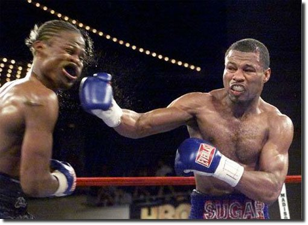
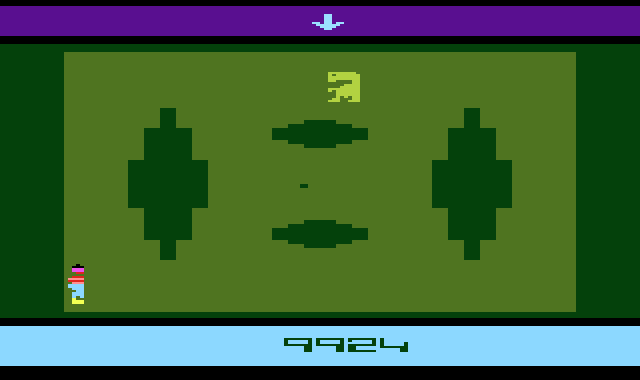
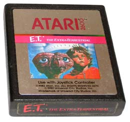
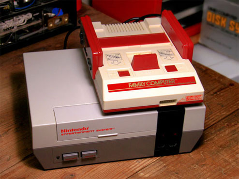
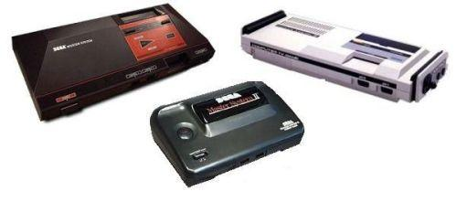

Velhinhos 8-bits
 :::. Por Gigacom
:::. Por Gigacom
Desde
que me entendo por gente, a disputa entre SEGA e Nintendo nos idos anos
80 e 90, gerava discursões infindavéis, brigas de
colégio, separação de namorados e as vezes
até morte. Na verdade podemos dizer que essa questão
ainda permanece viva, e gera tópicos imensos em forums de
discursão com tudo quanto é tipo de opnião de
diversos fãs em todos os lugares.
De
qualquer forma, não há um melhor que todos no mundo dos
video games, nunca nem houve. Existem consoles e consoles, um voltado
para um publico, outro mais direcionado à um pequeno nicho de
pessoas. É claro que tanto Nintendo quanto Sega trabalhavam para
alcançar às alturas e derrotar a concorrente, mas nenhuma
conseguiu isso. Mas para saber quem realmente era o melhor 8-bits,
é preciso ao menos conhecer a historia de cada um, então
vamos lá:
|  |
| A briga das duas gigantes foi feia que nem essa luta aé |
O surpreendente NES
Quase ninguem sabe. Mas lá pelo meio dos anos 80, video game era considerado um negocio antiquado e ultrapassado. O Atari, o principal console que revolucionou a forma de se divertir em frente à uma TV, foi tambem o algoz que enterrou essa mesma revolução. Quando a Time Warner comprou a Atari ainda no inicio do seu sucesso, ela resolveu permitir e incentivar o lançamento de qualquer porquera de jogo para o Atari 2600. Então uma enxurrada de jogos novos invadiam as prateleiras americanas à cada semana, sendo que de cada 10 jogos, 11 eram ruins, 12 pessímos e o restante injogavél. Resultado: o povo cançou de comprar joguinho do Atari (até então praticamente o único video game do mundo), e o publico voltou o seu interesse para outra novidade mais chamativa, os computadores caseiros.
|  |  |
| O cartucho do E.T. para Atari, é conhecido como um dos piores jogos de todos os tempos. Houveram muitos outros que ajudaram a enterrar o Atari, assim como o resto da industria de video games no inicio da década de 80... |
|
Intão, quando ninguem mais queria saber de video games, aparece a Nintendo, com o incrivel Famicom. A
idéia do Famicom era em principio simples, mas audaciosa. Ele
deveria ser um console potente suficiente para refazer a roda, para
fazer as pessoas esquecerem os jogos simples do Atari e experimentarem
uma nova sensação de interatividade e diversão.
Com um conjunto de chips poderosos para aqueles dias, o Famicom fez um
sucesso estrondoso no Japão, e logo em seguida uma
versão dele foi preparada para ser lançada nos EUA.
Na América, o Famicom não poderia aparecer como se fosse mais um brinquedo, ele tinha que ter algo mais, algo que pudesse despertar o interesse daquelas pessoas que procuravam cada vez mais eletronicos avançados, então o design do Famicom foi refeito, e surgiu assim o Nintendo Entertainment System, ou abriviando NES.
Com o jeitão quadradão, mas que chamava atenção, ainda assim poucas lojas abriram as portas para o novo aparelho. Inicialmente, apenas algumas lojinhas lá em Nova Yorque apresentaram o NES aos americanos, e nem precisaram de muito tempo para que logo o console da Nintendo ganhasse matérias em jornais e na TV. Pronto, o sucesso já estava à caminho, e a industria do video game ressurgiu. Como a Nintendo nunca foi besta, tratou logo de preparar duas coisas que garantiriam o sucesso do NES por muito tempo:
1º Todo jogo do NES teria que ser projetado e feito de acordo com um rol imenso de regras e diretrizes da Nintendo. Tudo para impedir que conteúdo inadequado ou jogos imprestáveis fossem para as prateleiras.
2º Jogo publicado para o NES, é só do NES. Esse é o fim dos famosos contratos de exclusividade que a Nintendo fez com as maiores softhouses daqueles dias, o que garantiu que os melhores jogos do NES fossem publicados somente para ele, e não para um ou outro video game da concorrência que pudesse aparecer.
Com isso a Nintendo preveniu que os motivos que mataram o Atari voltassem a ressugir, e como havia dito, em pouquissimo tempo o NES ganhou a midia e o sucesso, mas graças à inovação do jeito de jogar, já que joguinhos como Mario Bross mostraram ao mundo um jogo formado com gráficos em sprites (não, não é aquele refri de limão, são imagens mesmo) e trilha sonora ao fundo, ao contrário dos simples quadradinhos do Atari, e os barulhinos de bipe que ele emitia, sem falar nas várias fazes que os jogos de NES possuiam, ao contrário de cenários estáticos tão usados no Atari.
Master System: o arcade em sua casa
Enquanto que o video game já estava enterrado, sepultado e comido pelos vermes no ocidente, lá na terra dos homi com olhos puxados o mesmo não acontecera. Claro, vale ressaltar que no mundo todo (com excessão de uns atrasados como o Brasil) ainda se divertia com arcades, que eram muito mais avançados que o Atari. Então, lá no Japão principalmente, os jogos eletrônicos não deixaram mesmo de existir, e muito menos de ter seu publico fiel. Tá certo que o Atari lá nem fez tanta coisa assim, mas o espaço proporcionado por ele abriu caminho para o aparecimento do Famicom logo no inicio dos anos 80, e consequentemente permitiu que outras empresas tambem projetassem e lançassem seus proprios video games. Esse é o cenário em que se via a Sega. Ela fez alguns testes de mercado, lançando o SG-1000, um tatáravô do Master System, que não fedeu e nem cheirou. Depois ela apresentou o SG-1000 II, uma reformulação do console anterior, com alguns acessórios que o tornavam um hibrido, podendo servir de computador e video game. Como a coisa já tava começando a caminhar, mas ainda muito limitada por conta do hardware, a Sega refez o projeto, e lançou o fodastico SEGA MARK III. Mais memória RAM, um processador de video mais aprumado, umas portas à mais para acessórios, e assim surgiu o console mais-mais-mais tchan! daqueles dias, que digamos de passagem, era MUITO superior tecnicamente ao NES, deixando-o no chinelo em TODOS os quesitos. Posteriormente, o Mark III recebeu uma nova cara e um chip de som diferente (o Yamaha YM2413), dai é que veio o Sega Master System, lançado em 87 em todo o mundo.
|  |
| O Sega Mark III (o branquinho aí em cima) recebeu uma cara nova e virou o Master System (pretinho ao lado) que mais pra frente recebeu outras revisões, como o 3º console da foto. |
Mesmo antes do SG-1000, a Sega era bastante conhecida pelos seus jogos de pinball e arcades, que renderam rios de dinheiro para a empresa, e criou o mito SEGA. O Master System era para ser o console que possibilitaria aos gamers jogarem aqueles grandes sucessos do arcade em casa, além de muitos outros jogos tecnicamente superiores ao NES. Sendo assim, os principais jogos de arcade da SEGA tiveram suas versões para o console de 8-bits, jogos como Hang-On, Space Harrier, Shinobi e outros. Tá certo que alguns ficaram muito parecidos com as versões originais, mas outros ficaram completamente diferentes...
Tá, e agora, qual é o melhor?
Agora que você conhece mais ou menos a historia inicial de cada um, chegou o momento de saber qual dos dois é melhor. E o melhor é... é... É... Nenhum dos dois. Costumo dizer que o que faz um video game bom são seus jogos, mas tambem o que o torna melhor depende mais do gosto de cada um. Por exemplo, os jogos do Master todos tem uma qualidade imensa, praticamente toda a biblioteca de jogos dele é feita só de jogão, apesar dessa biblioteca não ser tão grande assim... do outro lado, temos o NES, que possui uma quantidade muito maior de jogos, sendo que a grande maioria é simplesmente viciante e fazem a alegria de muita gente até hoje.
Comparando a qualidade dos jogos de um e outro, percebe-se facilmente que em questão de gráficos e som os jogos do Master são muito melhores, porém o NES tem jogos que esbanjam originalidade e diversão. Mas o Master tem o Phantasy Star, que em vários conceitos é muito melhor que Final Fantasy do NES, porém o Mario 3 é muito mais divertido que Alex Kidd.
Enfim, há gosto e gostos, tem gente que odeia o NES, outros já o adoram a ponto de seguirem uma religião (tem uma seita que é até famosa, a do NES INVISIVEL!). Outros amam o Master de paixão e nem tão aí pro NES. De qualquer forma, ambos os consoles tem suas qualidades e limitações, mas os dois foram feitos para divertir, o que invariavelmente conseguem fazer ainda hoje.
Acesse o Trombone e comente sobre essa matéria!


Um dos erros mais imperdoáveis da Sega. Em 90/91 mais ou menos, a Sega ganhou da Tecmo a oportunidade de fazer umas versões do Ninja Gaiden para os seus consoles. Essa chance é comparável ao que Deus fez quando deu o mundo para Adão... bem, o final tanto de Adão quanto da Sega nesse caso são semelhantes.
Albert Odyssey é um dos jogos mais amados pelos fãs do Saturn. Com uma história simples mas rica, dramatica e emocionante, encantou muita gente que naquele inicio da era 32 bits, ainda não estava acostumada com trilha sonora feita com instrumentos de verdade e gráficos cheios de luz e efeitos. Mas, não era para ser assim com esse jogo...